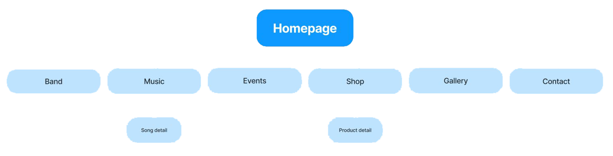
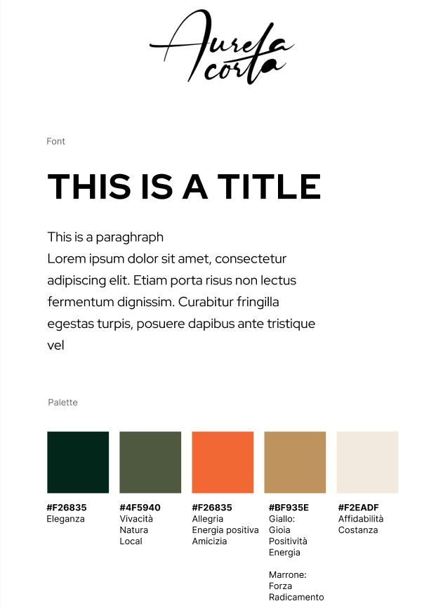

Abstract
Il sito web per la band “Aurela Cörta” è stato realizzato con il fine di aumentare la visibilità della band. Ha lo scopo di ampliare il range di raggiungibilità sul web, di far conoscere meglio la band al suo pubblico e di facilitare il contatto tra band e pubblico. Il target utente è un pubblico giovane, perlopiù tra i 15 e 35 anni, che vive in Alto Adige.
Project Management Plan
BENCHMARKING
1. Obiettivi
Ha lo scopo di ampliare il range di raggiungibilità della band sul web, di far conoscere meglio la band al suo pubblico e di facilitare il contatto tra band e pubblico. I temi sono il background del gruppo musicale e dei suoi membri, la musica, gli eventi, lo shop di merchandising e la gallery di foto.
2. Target utente
Il target utente primario è, come anticipato, un pubblico giovane, tra i 15 e i 35 anni, che vive in Alto Adige. Idealmente è alla ricerca di un accompagnamento musicale per qualche evento come per esempio il proprio matrimonio.
3. Competitors
I due competitor principali selezionati sono www.wisetimeband.it e www.jimihenndreck.com
Wisetime.it:
La band “Wisetime”, anch’essa attiva nella zona della Val Badia, ha un target di utenti diverso. L’età è compresa principalmente fra i 30 i 50 anni. Il genere musicale è rock e oldies. Il sito è formato da diverse pagine web. Descrive in modo approfondito la storia della band e dei suoi membri, presenta il repertorio di immagini, audio e video che riguardano la band. Grafica e struttura sono migliorabili.
Jimihenndreck.com:
Ampliando il raggio di analisi all’intero Alto Adige è stato selezionato anche il sito della band “Jimi Henndreck”. È un gruppo musicale molto simile a "Aurela Cörta", ha un target utente giovane, cantano nel loro dialetto e si presentano come band innovativa. Il sito web è one page e racconta la band in modo sintetico ma puntuale. Graficamente i contenuti sono organizzati in modo originale e creativo. I testi comici che usa sono adatti al linguaggio di un pubblico giovane.
Dati dei social dei competitor:
STRUTTURA E LAYOUT
1. Architettura del sito
2. Wireframes
3. Look & Feel
Le scelte grafiche sono state prese in base a come la band vuole essere percepita: innovativa e seia però amichevole
Il font che è stato scelto si chiama Red Hat Display. Si tratta di un carattere geometrico, razionale e ingegneristico a contrasto con il font del logotipo.
La palette colori è caratterizzata soprattutto dal colore arancione, simbolo di amicizia e vivacità, accostato a un verde oliva abbastanza scuro e a un colore ocra. Come colori più neutri sono stati scelti un crema e verde scurissimo tendente al nero.
LINGUAGGIO E STRUMENTI
1. Linguaggi:
Linguaggio di Markup HTML
Linguaggio per la grafica CSS
Linguaggio di programmazione: Javascript
2. Strumenti:
Pianificazione:
• Google Forms
• Google Trends
Design e grafica:
• Google Fonts: font
• Adobe Colors: palette di colori
• Figma: architettura ad albero, wireframes e grafica del sito
• Font Awesome: Icons
Lancio e valutazione:
• Github: pubblicazione del sito
• Google Analytics: conteggio dei visitatori del sito
• Instagram e Facebook:
Comunication Strategy
1. Backgroud
Dal benchmarking è risultato che pochissime band locali simili presentano un sito web. Ciò significa che il sito ha molto potenziale a livello locale.
2. Obiettivi comunicativi
L'obiettivo è quello di fare pubblicità e aumentare la visibilità della band
3. Target audience e messaggio
Il target utente del sito sono gli under 30, gruppo di persone che viene raggiunto specialmente tramite i social. Per pubblicizzare il sito è stata creata una grafica da condividere sui vari social.
4. Promozione
Per la promozione del sito sono stati usati principalmente Instagram e WhatsApp che sono i due canali più utilizzati dal target utente.
5. Valutazione dei risultati